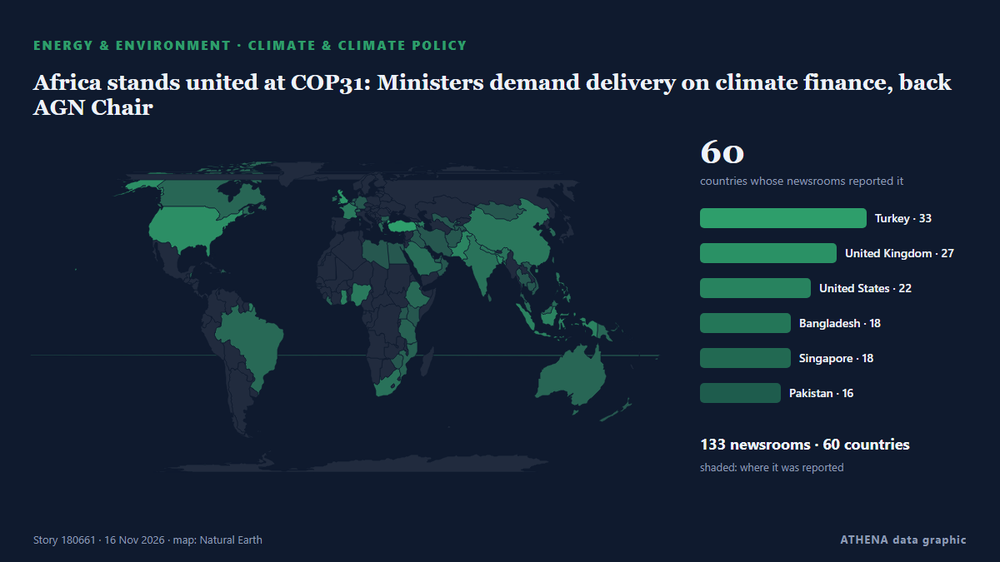

Climat et politique climatique
SponsoriséPrésenté par  Cybernetics and Artificial Intelligence Lab Welcome to the Cybernetics and Artificial Intelligence Laboratory, established at the Department of Business Administration of the National and Kapodistrian University of Athens. The lab is headed by Professor Dimitrios Thomakos. The lab aims to do research that can be published in top venues. Our research uses tools and methods of Artificial Intelligence, and lies in the following areas: - Forecasting - Decision making - Cyber security - Finance We are always looking forward to collaborating with exceptional students!
Cybernetics and Artificial Intelligence Lab Welcome to the Cybernetics and Artificial Intelligence Laboratory, established at the Department of Business Administration of the National and Kapodistrian University of Athens. The lab is headed by Professor Dimitrios Thomakos. The lab aims to do research that can be published in top venues. Our research uses tools and methods of Artificial Intelligence, and lies in the following areas: - Forecasting - Decision making - Cyber security - Finance We are always looking forward to collaborating with exceptional students!
| 3 nov. | 0 |
|---|---|
| 4 nov. | 0 |
| 5 nov. | 0 |
| 6 nov. | 0 |
| 7 nov. | 1 |
| 8 nov. | 1 |
| 9 nov. | 2 |
| 10 nov. | 2 |
| 11 nov. | 4 |
| 12 nov. | 3 |
| 13 nov. | 2 |
| 14 nov. | 3 |
| 15 nov. | 3 |
| 16 nov. | 1 |
Les titres sont affichés en anglais, tels que publiés.

Africa stands united at COP31: Ministers demand delivery on climate finance, back AGN Chair
As high-stakes negotiations unfold at the 31st UN climate change conference (COP31) in Antalya, African nations have united behind the continent's negotiation strategy, demanding that developed… de MyJoyOnline
Presidential envoy expresses Korea's commitment to green transformation at COP31
Korea's presidential envoy to the UN climate summit has called for joint international efforts to tackle the climate crisis and expressed the country's commitment to a green transformation, the… de The Korea Times
Kiribati vice president Dr Teuea Toatu dies
Dr Teuea Toatu's passing was announced by Cabinet colleague Ruth Cross Kwansing on Sunday night. de RNZ National
Nations grapple with loss of 1.5C target at UN climate summit
The world has already warmed by about 1.4°C above pre-industrial levels, with the UN warning in September that breaching the Paris Agreement’s 1.5°C threshold was imminent and unavoidable. de Free Malaysia Today
Tricky trade-offs will show what Labor values most when we can’t have it all
From AI job losses to productivity and tackling climate change, public debate is awash right now with choices between incompatible goals. de Sydney Morning Herald
Singapore authorises first carbon project with Rwanda for international emissions offsetting
Through this, around 780,000 tonnes of CO2 equivalent is set to be mitigated between 2026 and 2030. de The Business Times
UN launches Disaster Risk Financing Platform at COP31 to make humanitarian responses faster and more predictable
The initiative aims to secure access to more than US$3 billion in risk financing to protect 75 million people from climate shocks by 2030. de UNICEF
Sadiq Khan says climate policies helped secure three terms as London mayor
Speaking at COP31 in Antalya, Sadiq Khan highlights cleaner transport, pedestrianisation and urban planning as examples of how climate action can benefit cities and voters. de TRT World
Afghanistan's olive groves give farmers relief from climate crisis
The United Nations Climate Change Conferences (COP) are among the most important international forums for examining the impacts of climate change, coordinating global efforts to address the crisis… de Khaama Press
UN chief urges world to end fossil fuel addiction at COP31
UN chief António Guterres called for a new global climate justice agreement at COP31 on Wednesday, urging governments to tax fossil fuel companies to help countries bearing the brunt of a crisis they… de UN News
India should get energy first, decarbonise once richer, says Steven Koonin at HT Leadership Summit
The physicist says United Nations climate talks have failed to curb emissions or deliver promised finance. de Hindustan Times
Act now against El Nino or costs will double, UNDP warns
ANTALYA, Turkey (AFP) — Acting now to counter the devastating effects of the El Nino phenomenon will cost half as much as waiting, the head of the UN Development Programme told AFP Friday. de Jamaica Observer
National Capital Commission considering artificial freezing for Rideau Canal Skateway
The operators of the iconic Rideau Canal Skateway in Ottawa may turn to artificial cooling to keep it frozen in coming years, as climate change wreaks havoc with the centrepiece of the city's… de The Canadian Press (via CityNews)
‘Erdogan did not invite Christodoulides to Cop31’
President Nikos Christodoulides’ invitation to attend the Cop31 climate summit in Antalya came from the summit’s secretariat rather than Turkish President Recep Tayyip Erdogan, Turkish newspaper… de Cyprus Mail
The planet ‘is being killed’, Greta Thunberg tells Cop31 climate summit
Swedish activist criticised world governments for their failure to prevent environmental breakdown The planet is “not dying, it is being killed and we know by who”, said Greta Thunberg, who… de The Guardian
Emine Erdoğan showcases Türkiye's zero waste drive at COP31
Türkiye's first lady, Emine Erdoğan, inaugurated the Zero Waste Museum in the Blue Zone of the 31st United Nations Climate Change Conference (COP31) in Antalya on Thursday. de Daily Sabah
Global Warming Remains Unchecked, Experts Warn at UN’s COP31 Climate Summit
ANTALYA, Turkey—Amid upbeat green-tech pep talks and notices for happy hours at the annual United Nations COP31 climate change conference on Thursday, two new reports offered a stark reminder of how… de Inside Climate News